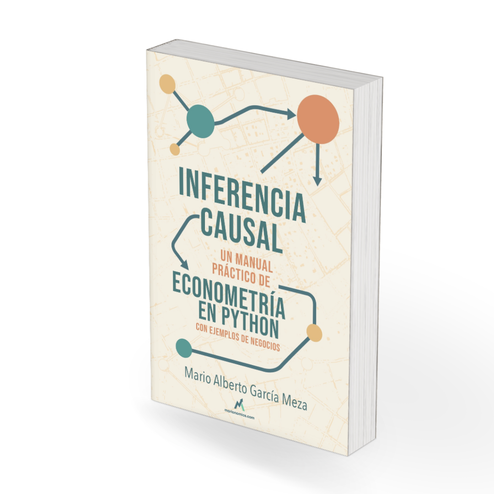

Inferencia Causal: un manual práctico de econometría en Python con ejemplos de negocios#
{kind=link}

Los economistas de verdad usan econometría. Y los econometristas usan inferencia causal.
En los últimos años, la econometría ha sufrido cambios gigantescos que la han elevado a categoría de ciencia. Es un fenómeno que se conoce como la revolución de la credibilidad.
Nos conviene que los gobiernos conozcan lo que funciona y lo que no al momento de diseñar políticas públicas.
Nos conviene que las empresas entiendan cómo hacer crecer sus negocios de manera más eficiente y con responsabilidad social. Después de todo, la economía se trata del uso eficiente de recursos escasos.
Como integrantes de la sociedad, nosotros podemos participar en los procesos democráticos mejor informados.
Un recurso gratuito para aprender econometría en línea#
Por las razones arriba mencionadas, considero que es importante que esta información esté disponible para todos. Para que como sociedad tomemos mejores decisiones, es necesario conocer bien cómo leer los datos y entre más personas conozcan estas técnicas, mejor nos podremos comunicar entre nosotros con el lenguaje de la estadística y la econometría.
En marionomics.com tengo una suscripción premium. Con esa suscripción tendrás dos beneficios relacionados con este libro:
Actualizaciones periódicas adelantadas. El primer lugar en el que se publican los elementos de este libro es en mi página. Con una suscripción premium te llegarán a tu correo antes que a nadie.
Libro físico en preventa. En cuanto esté terminado el libro, te llegará a tu casa un ejemplar en formato físico.
Estructura del libro#
Este libro está organizado en cuatro partes:
Introducción — Comenzamos con la historia de John Snow y la inferencia causal, seguida de una motivación de por qué los negocios necesitan econometría, y una introducción a Python como herramienta de análisis.
Inferencia Causal — Cubrimos los fundamentos teóricos: el modelo de resultados potenciales y el diseño de experimentos.
Modelos — La parte técnica del libro: regresión lineal por mínimos cuadrados, series de tiempo, efectos fijos y diferencias en diferencias.
Negocios — Aplicaciones prácticas: iteración con datos y la investigación de mercados con inteligencia artificial.
Cómo citar este libro#
Si utilizas este libro en tu trabajo académico o profesional, por favor cítalo de la siguiente manera:
García Meza, M. A. (2025). Inferencia Causal: un manual práctico de econometría en Python con ejemplos de negocios. Disponible en: https://marionomics.github.io/econometria/
BibTeX:
@book{garciameza2025econometria,
author = {García Meza, Mario Alberto},
title = {Inferencia Causal: un manual práctico de econometría en Python con ejemplos de negocios},
year = {2025},
url = {https://marionomics.github.io/econometria/},
publisher = {Publicación en línea}
}
Contenidos del libro#
Introducción
Inferencia Causal
Modelos
Negocios
Referencias